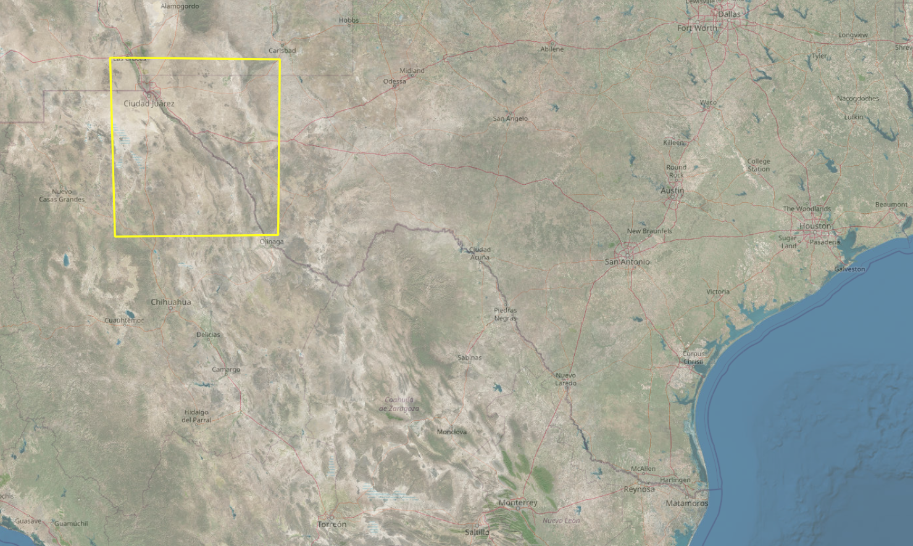

Dataset & Sources: Section 1

Relative positions of Rio Grande near El Paso between 1852 and 1907

Source
1890s:
El Paso 1896, Rio Grande 1896, Fort Hancock 1894, Eagle Mountain 1897: U.S. Geological Survey


El Paso, TX 1953: U.S. Geological Survey

Source